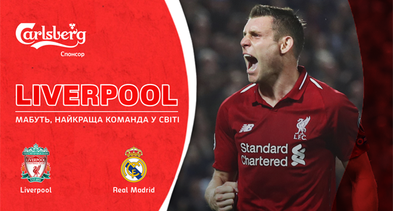
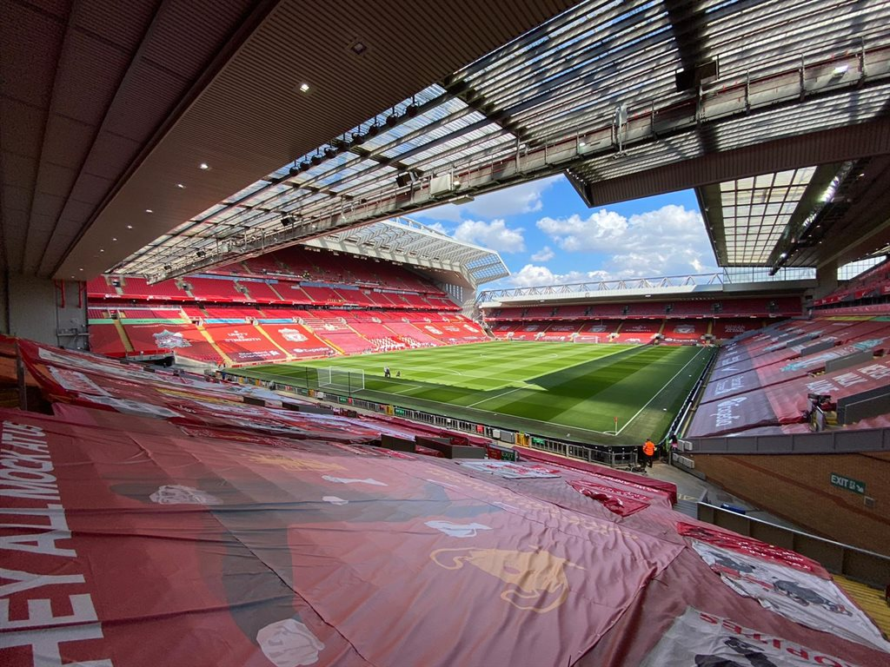

Ливерпуль — Реал. Накануне
14 апреля 2021
В ответном четвертьфинальном матче Лиги чемпионов против Ливерпуля Реал постарается использовать "фундамент", заложенный им в первом поединке.
Ливерпуль — Реал
Среда, 14 апреля, 22:00. Ливерпуль, Энфилд Роуд. Арбитр — Бьорн Кейперс (Нидерланды). Прямая трансляция на телеканале Футбол 2 и Сервисе MEGOGO. Первый матч — 1:3

Интересные факты
– Команды провели между собой 7 матчей в еврокубках: 4 победы Реала и 3 победы Ливерпуля.
– Реал выиграл 6 из последних 7-ми матчей Лиги чемпионов.
– Реал выиграл у Ливерпуля в последних четырех очных встречах во всех турнирах.